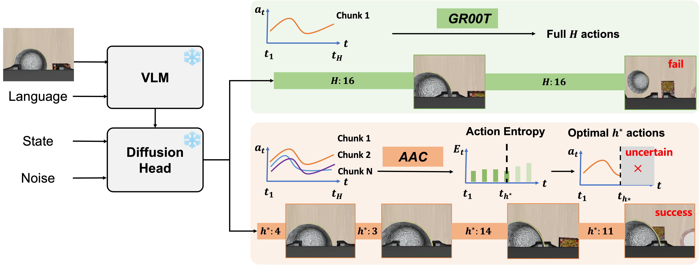

In Vision-Language-Action (VLA) models, action chunking (i.e., executing a sequence of actions without intermediate replanning) is a key technique to improve robotic manipulation abilities. However, a large chunk size reduces the model’s responsiveness to new information, while a small one increases the likelihood of mode-jumping, jerky behavior resulting from discontinuities between chunks.
Therefore, selecting the optimal chunk size is an urgent demand to balance the model's reactivity and consistency. Unfortunately, a dominant trend in current VLA models is an empirical fixed chunk length at inference-time, hindering their superiority and scalability across diverse manipulation tasks.
To address this issue, we propose a novel Adaptive Action Chunking (AAC) strategy, which exploits action entropy as the cue to adaptively determine the chunk size based on current predictions. Extensive experiments on a wide range of simulated and real-world robotic manipulation tasks have demonstrated that our approach substantially improves performance over the state-of-the-art alternatives.
Our proposed AAC uses action entropy to dynamically adjust the chunk length. When entropy is high (uncertainty), the model utilizes smaller chunks to remain reactive. When entropy is low (confidence), the model commits to larger chunks for smooth, consistent trajectories.

@inproceedings{liang2024aac,
author = {Yuanchang Liang, Xiaobo Wang, Kai Wang, Shuo Wang, Xiaojiang Peng, Haoyu Chen, David Kim Huat Chua, Vadakkepat Prahlad},
title = {Adaptive Action Chunking at Inference-time for Vision-Language-Action Models},
booktitle = {CVPR},
year = {2026},
}